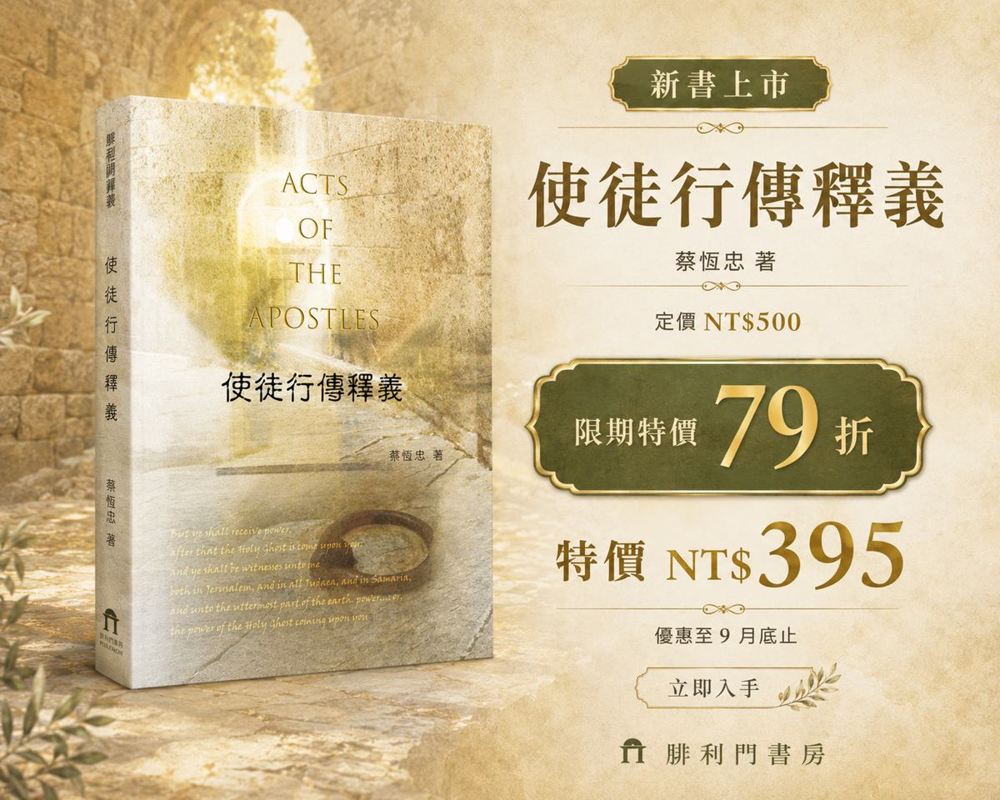
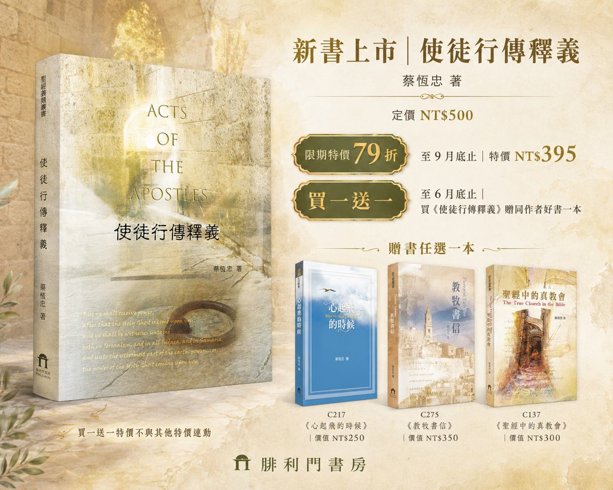
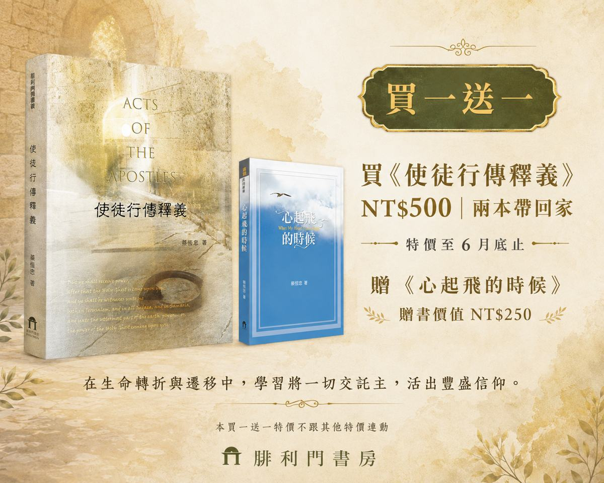
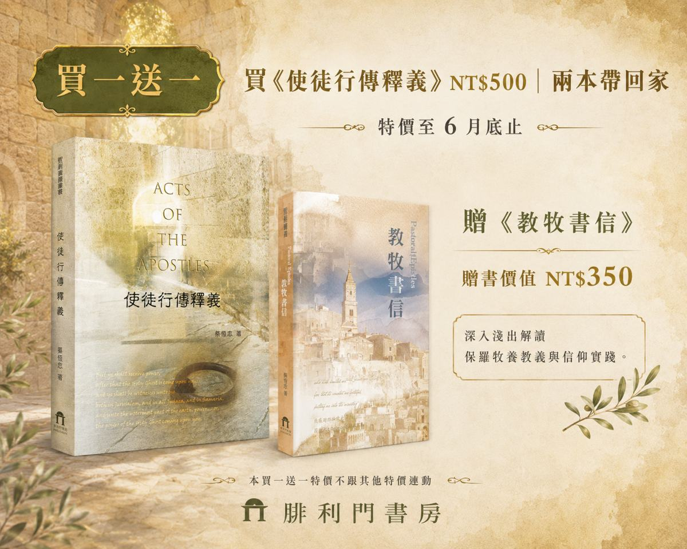
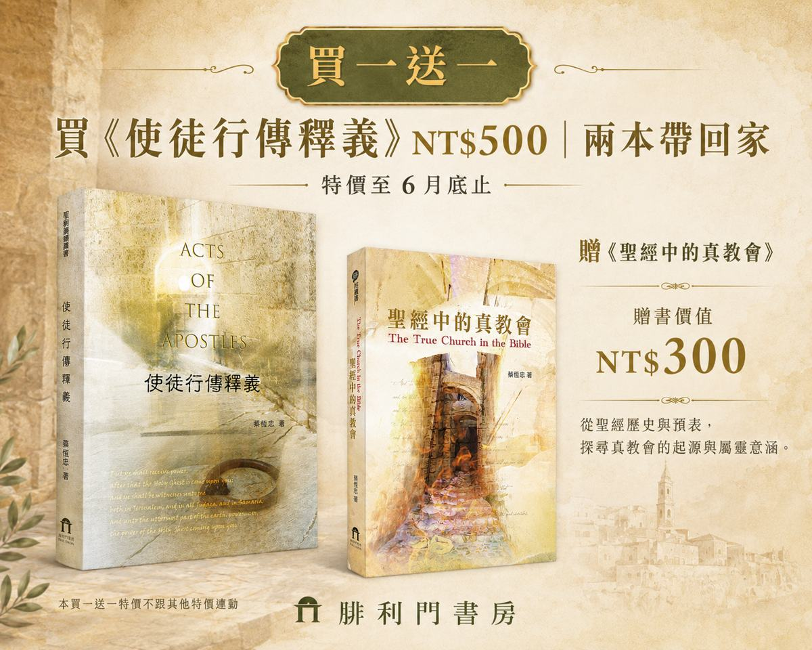

Exclusive Offer
限定禮遇：專屬贈書方案
在文字中遇見驚喜，現在購書即可獲得蔡恆忠長老精選作品。



Core Insight
這不只是解釋經文，更是重溫一場改變世界的行動
應許的履行
從主耶穌的升天到五旬節的降臨，看見聖靈如何按照應許，成為教會前行最關鍵的力量。
根基的建立
不只是歷史紀錄，更是屬靈範式。還原初代聖徒如何在一心一意的團契中，建立不可撼動的信仰根基。
疆界的擴張
從耶路撒冷、猶太全地直到地極，保羅的腳蹤揭示了福音如何突破文化與環境的重重限制。
Framework
結構分明，條理清晰的查經指引
蔡恆忠長老將《使徒行傳》複雜的歷史背景，梳理成三個清晰的階段，讓讀者輕鬆掌握經文核心。
-
第一階段 (1-12 章)
教會的誕生與發展：從耶路撒冷到彼得的宣教。
-
第二階段 (13-23 章)
向外擴展的恩膏：保羅的三次宣教旅程。
-
第三階段 (24-28 章)
忠心至死的見證：保羅受審與羅馬之行。
書中特別強化了地名與當代背景的解讀，讓經文不再只是文字，而是躍然紙上的生動場景。
Interactive Preview
沉浸式試讀體驗
先行領略蔡恆忠長老的深度釋義，感受聖靈引領的信仰航道。
正在開啟精彩章節...
Final Call
準備好開始這趟屬靈旅程了嗎？
《使徒行傳釋義》是您研讀聖經、建立信仰根基的最佳夥伴。